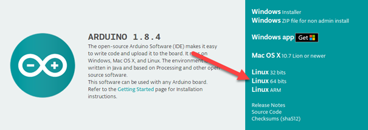
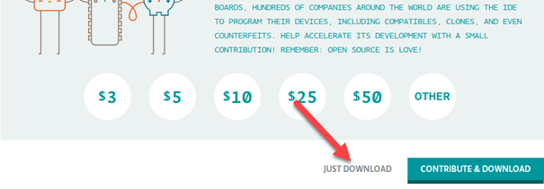
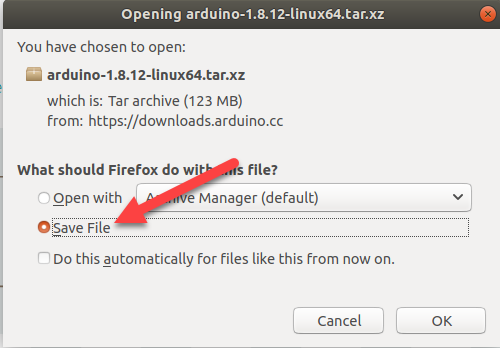

De Arduino IDE komt niet als pakket maar als een archief: een map met daarin het programma en een script dat het op zijn plaats zet. Je pakt het archief uit, je zoekt in de map het script, en je voert dat uit. Er is hier geen enkel commando dat dependencies voor je haalt.
Surf vanaf je Ubuntu-machine naar arduino.cc, klik op Download en
kies de Linux 64 bits versie.

Arduino vraagt eerst een bijdrage. Klik op JUST DOWNLOAD.

Kies Save File. Het bestand komt in je map Downloads terecht.

Ga met de terminal naar je map Downloads en kijk wat er staat.
total 123M
drwxr-xr-x 2 elm elm 4,0K Apr 14 20:20 .
drwxr-xr-x 23 elm elm 4,0K Apr 14 12:06 ..
-rw-rw-r-- 1 elm elm 123M Apr 14 20:19 arduino-1.8.12-linux64.tar.xz
De extensie is .tar.xz en niet .tar.gz. Het is dus met xz ingepakt in
plaats van met gzip, en dat verandert de opties die je aan tar geeft.
Pak het uit. Zonder de z herkent tar zelf welke compressie het
tegenkomt.
Er staat nu een map naast het archief.
total 123M
drwxr-xr-x 3 elm elm 4,0K Apr 14 20:31 .
drwxr-xr-x 23 elm elm 4,0K Apr 14 12:06 ..
drwxr-xr-x 10 elm elm 4,0K Feb 13 10:32 arduino-1.8.12
-r--r--r-- 1 elm elm 123M Apr 14 20:19 arduino-1.8.12-linux64.tar.xz
Ga in die map en kijk wat erin staat.
total 18M
-rwxr-xr-x 1 elm elm 882 Feb 13 10:32 arduino
-rwxr-xr-x 1 elm elm 18M Feb 13 10:32 arduino-builder
-rwxr-xr-x 1 elm elm 5,8K Feb 13 10:32 arduino-linux-setup.sh
drwxr-xr-x 13 elm elm 4,0K Feb 13 10:32 examples
drwxr-xr-x 4 elm elm 4,0K Feb 13 10:32 hardware
-rwxr-xr-x 1 elm elm 11K Feb 13 10:32 install.sh
drwxr-xr-x 6 elm elm 4,0K Feb 11 13:00 java
drwxr-xr-x 4 elm elm 4,0K Feb 13 10:32 lib
drwxr-xr-x 21 elm elm 4,0K Feb 13 10:32 libraries
drwxr-xr-x 4 elm elm 4,0K Feb 13 10:32 reference
-rw-r--r-- 1 elm elm 91K Feb 13 10:32 revisions.txt
drwxr-xr-x 4 elm elm 4,0K Feb 13 10:32 tools
-rwxr-xr-x 1 elm elm 86 Feb 13 10:32 uninstall.sh
install.sh is het script dat je zoekt, en aan zijn rechten zie je dat het
uitgevoerd mag worden: er staat een x op alle drie de plaatsen van
-rwxr-xr-x. Ernaast staat uninstall.sh, waarmee je het later weer
weghaalt.
Voer het uit. De ./ ervoor zegt dat het script in de map staat waar je nu bent, en
sudo staat erbij omdat de installatie bestanden en instellingen wegschrijft buiten
je eigen map.
Zoek Arduino IDE op tussen je toepassingen en start het.
Wat er in install.sh staat, gebeurt met de rechten van root. Haal zo'n script dus altijd
bij de maker zelf en niet uit een zoekresultaat, en dat is precies waarom je hier op arduino.cc
begonnen bent.